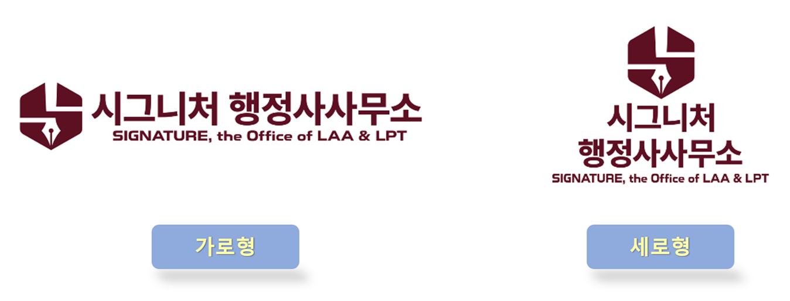

대표 인사말씀
안녕하십니까?
시그니처 행정사사무소 홈페이지를 찾아 주신 모든 분들께 진심으로 감사드립니다!
저희 시그니처 행정사사무소는 차별화된 전문성과 경험, 신뢰와 책임감을 바탕으로 의뢰인 한 분 한 분에게 최적의 원스톱 솔루션을 제공하여 신뢰받는 행정전문 파트너가 되고자 설립되었습니다.
시그니처 행정사사무소는 국가공인 자격인 「일반행정사」, 「외국어번역행정사」, 「의료기기 RA(규제과학) 전문가」, 「도시계획기사」 자격을 비롯하여, 「ISO 13485 심사원」, 「IP(특허) 번역사」 등의 전문 자격을 보유하고 있으며, 해외 근무경험을 통한 국제적 마인드와 융합적 전문성을 바탕으로 『일반행정 컨설팅』, 『공인번역 컨설팅』, 『의료기기 컨설팅』 업무를 주력으로 전문성과 신뢰성이 요구되는 분야에서 차별화된 컨설팅 서비스를 제공하고 있습니다.
시그니처 행정사사무소는 “의뢰인과의 신뢰관계, 동반 성장과 성공의 파트너십”을 가장 중요한 가치로 생각합니다.
의뢰인이 안심하고 맡기실 수 있도록, 의뢰인의 선택에 결과로 보답하는 시그니처 행정사사무소가 되도록 최선을 다하겠습니다.
감사합니다!
시그니처 행정사사무소
대표 전진용 행정사 배상
학력
- 홍익대 공대 졸업
- 미 텍사스주립대 건축대학원 졸업
- 미 텍사스주립대 경영대학원 졸업
국내 및 국외 경력
- 국내: 서울시 공공기관 근무
- 국내: 바이오·분자진단의료기기 전문기업 근무
- 국외: 미 텍사스 주정부 산하기관 근무
자격 및 면허
- 일반행정사(국가 공인)
- 외국어번역행정사(국가 공인)
- 법무부 등록 출입국민원 대행기관
- 대한행정사회 정회원
- 의료기기 RA(규제과학) 전문가(국가공인)
- ISO 13485 심사원
- IP(특허) 번역사
- 도시계획기사(국가공인)
- ESG컨설턴트
- 청소년심리상담사/학교폭력예방상담사
CI
CI (Corporate Identity) 소개

시그니처 행정사사무소의 CI는 “차별화된 전문성과 신뢰성”, 그리고 “의뢰인과 함께 하는 동반 성장과 성공의 파트너십”을 핵심가치로 담고 있습니다.
심볼 마크
정육각형
기하학적 정육각형의 심볼은 당 사무소의 상호명인 시그니처(SIGNATURE)의 첫 글자 ‘S’자를 모티브로 하여, 완결적이고 균형 잡힌 구조인 정육각형의 로고 이미지를 통해 차별화된 전문성과 균형 잡힌 안정감을 표현합니다.
알파벳 ‘S’자의 형상화
시그니처(SIGNATURE)의 첫 글자인 'S'자 로고의 형상과 라인은 곧은 펜대와 펜촉, 완결적이고 균형 잡힌 정육각형의 기하학적 구조를 자연스럽게 어우러지도록 형상화한 것으로, 의뢰인이 맡겨 주신 위임업무를 시작부터 끝까지 최적의 맞춤형 솔루션으로 완성하는 차별화된 전문성을 나타냅니다.
곧은 펜대와 펜촉
정육각형의 ‘S’자 로고가 품고 있는 곧은 펜대와 펜촉은 시그니처 행정사사무소의 3대 핵심 컨설팅 분야인 「일반행정 컨설팅」, 「공인번역 컨설팅」, 「의료기기 컨설팅」 서비스와 그 결과물을 구현해내는 각종 서면과 문서, 부속 서류와 첨부 자료 등의 세심한 작성과 처리를 상징하며, 의뢰인의 요구사항과 필요를 차별화된 전문성과 신뢰성으로 완성하겠다는 곧은 사명감을 담았습니다.
전용 색상
시그니처 버건디
CI의 메인 컬러인 깊은 시그니처 버건디 색상은 「국가공인 전문자격사」로서 『행정사』의 품격있는 신뢰와 무게감, 의뢰인과 함께 동반 성장하고 성공하고자 하는 인간적인 열정, 그리고 의뢰인이 맡겨 주신 위임업무는 끝까지 최선을 다하는 시그니처 행정사사무소의 한결 같은 진중한 자세와 진심이 담겨 있습니다.
오시는 길
주소 안내
서울시 구로구 디지털로 288, 대륭포스트타워 1차 208호
교통 안내
지하철 이용 시:
• 2호선 구로디지털단지역 ❷번 출입구에서 도보 90m 이동 ➔ 구로디지털단지역 정류장에서 구로 09번 마을버스 승차 후 2개 정류장 이동 ➔ 이마트 구로점 정류장에서 하차 후 도보 200m 이동
버스 이용 시:
• 5536, 5616, 6004, M6660번 버스 - 디지털산업 1단지 정류장 하차 후 도보 40m
• 영등포 01번 마을버스 - KEB 하나은행 정류장 하차 후 도보 150m
• 구로 09번 마을버스 - 이마트 구로점 정류장 하차 후 도보 200m
개인차량 이용 시:
네비게이션에 “대륭포스트타워1차주차장” 검색·설정 후 찾아 오시면 ➔ KSure 한국무역보험공사, SGI 서울보증 건물 바로 반대편에 ➔ 주차장 게이트로 들어오시면 됩니다.
길찾기
카카오맵 길찾기 버튼을 이용하시면 현재 위치 기준으로 가장 빠른 경로를 바로 확인하실 수 있습니다.